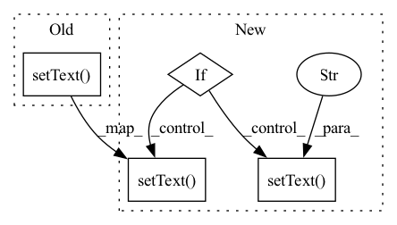

Pattern ID :11922
Before Change
self.ui.PredScanProgressBar.setMaximum(self.scan_count)
self.ui.PredScanProgressBar.setValue(0)
self.ui.PredScanLabel.setText( f"Scan ready for segmentation : 0 / {self.scan_count}")
self.total_seg_progress = self.scan_count * self.seg_cout
self.ui.PredSegProgressBar.setMaximum(self.total_seg_progress)After Change
self.ui.PredScanProgressBar.setMaximum(self.scan_count)
self.ui.PredScanProgressBar.setValue(0)
if not self.isSegmentInput:
self.ui.PredScanLabel.setText( f"Scan ready for segmentation : 0 / {self.scan_count}")
else:
self.ui.PredScanLabel.setText(f"Ouput generated for segmentation : 0 / {self.scan_count}" )
self.total_seg_progress = self.scan_count * self.seg_cout
self.ui.PredSegProgressBar.setMaximum(self.total_seg_progress)In pattern: SUPERPATTERN
Frequency: 3
Non-data size: 4
Instances Fragment ID: 40153652
Project Name: dcbia-ortholab/slicerautomateddentaltools
Commit Name: 3b13ad43651c5cd9e2fa7f923351de2a5625fca1
Time: 2022-11-10
Author: lanchlin@umich.edu
File Name: AMASSS/AMASSS.py
M Class Name: AMASSSWidget
N Class Name: AMASSSWidget
M Method Name: onProcessStarted(1)
N Method Name: onProcessStarted(1)
M Parent Class: VTKObservationMixin,ScriptedLoadableModuleWidget
N Parent Class: VTKObservationMixin,ScriptedLoadableModuleWidget
M File Name: AMASSS/AMASSS.py
N File Name: AMASSS/AMASSS.py
M Start Line: 630
M End Line: 630
N Start Line: 703
N End Line: 708
Before Change
if self.prediction_step == 1:
// self.progressBar.setValue(self.progress)
self.ui.PredScanProgressBar.setValue(self.progress)
self.ui.PredScanLabel.setText( f"Scan ready for segmentation : {self.progress} / {self.scan_count}")
if self.prediction_step == 2:
// self.progressBar.setValue(self.progress)
self.ui.PredSegProgressBar.setValue(self.progress)After Change
if self.prediction_step == 1:
// self.progressBar.setValue(self.progress)
self.ui.PredScanProgressBar.setValue(self.progress)
if not self.isSegmentInput:
self.ui.PredScanLabel.setText( f"Scan ready for segmentation : {self.progress} / {self.scan_count}")
else:
self.ui.PredScanLabel.setText(f"Ouput generated for segmentation : {self.progress} / {self.scan_count}" )
if self.prediction_step == 2:
// self.progressBar.setValue(self.progress)
self.ui.PredSegProgressBar.setValue(self.progress) Fragment ID: 40153653
Project Name: dcbia-ortholab/slicerautomateddentaltools
Commit Name: 3b13ad43651c5cd9e2fa7f923351de2a5625fca1
Time: 2022-11-10
Author: lanchlin@umich.edu
File Name: AMASSS/AMASSS.py
M Class Name: AMASSSWidget
N Class Name: AMASSSWidget
M Method Name: UpdateProgressBar(2)
N Method Name: UpdateProgressBar(2)
M Parent Class: VTKObservationMixin,ScriptedLoadableModuleWidget
N Parent Class: VTKObservationMixin,ScriptedLoadableModuleWidget
M File Name: AMASSS/AMASSS.py
N File Name: AMASSS/AMASSS.py
M Start Line: 680
M End Line: 680
N Start Line: 756
N End Line: 761
Before Change
self.setWindowTitle(self.task)
def onCountChanged(self, value, total):
self.info_label.setText( f"{self.task} {value}/{total}")
self.progress_bar.setValue(value)
def done(self, errors=[]):
self.done_window = DoneMessageWindow(self, self.task, errors)After Change
self.setWindowTitle(self.task)
def onCountChanged(self, value, total):
if value < 2:
// first image could take a while due to the initial delay in syncing
// so start estimating remaining time from second image onwards.
self.start_time = time.time()
self.info_label.setText( f"{self.task} {value}/{total}. "
"Estimating time remaining..")
else:
// value-1 because start_time is once the first image has completed.
seconds_remaining = self.get_seconds_remaining(value-1, total)
self.info_label.setText(f"{self.task} {value}/{total}. "
"Estimated time remaining: "
f"{format_timespan(seconds_remaining)}" )
self.progress_bar.setValue(value)
def done(self, errors=[]):
self.done_window = DoneMessageWindow(self, self.task, errors) Fragment ID: 40153651
Project Name: abe404/root_painter
Commit Name: f2f32022652078b15c37d1f5b0d4aaed12a09163
Time: 2022-09-16
Author: Abe404@users.noreply.github.com
File Name: painter/src/main/python/progress_widget.py
M Class Name: BaseProgressWidget
N Class Name: BaseProgressWidget
M Method Name: onCountChanged(3)
N Method Name: onCountChanged(3)
M Parent Class: QtWidgets.QWidget
N Parent Class: QtWidgets.QWidget
M File Name: painter/src/main/python/progress_widget.py
N File Name: painter/src/main/python/progress_widget.py
M Start Line: 78
M End Line: 78
N Start Line: 89
N End Line: 101